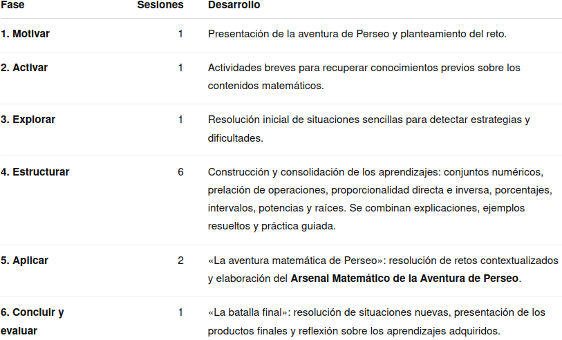

Justificación didáctica
La situación de aprendizaje «¡Liberad al Kraken Aritmético!» se plantea para 4º de ESO, Matemáticas A, utilizando como hilo conductor las películas Furia de Titanes e Ira de Titanes. La propuesta transforma los contenidos aritméticos en un reto narrativo y visual en el que el alumnado debe adquirir diferentes «armas matemáticas» para ayudar a Perseo a superar las pruebas de su aventura.
La elección de este contexto pretende favorecer especialmente la motivación y la implicación del alumnado con dificultades en Matemáticas, proporcionando un marco común que dé sentido a contenidos que, trabajados de forma aislada, pueden resultar abstractos. Los conjuntos numéricos, la prelación de operaciones, la proporcionalidad, los porcentajes, los intervalos, las potencias y las raíces aparecen como herramientas que el alumnado debe seleccionar y utilizar para resolver situaciones contextualizadas.
La propuesta parte de una metodología activa y participativa, con una progresión desde la activación de conocimientos previos hasta la resolución autónoma de problemas. Se concede especial importancia a que el alumnado no solo realice cálculos, sino que aprenda a identificar qué herramienta matemática necesita en cada situación, justificar el procedimiento y comprobar la coherencia del resultado.
La estructura en seis fases —Motivar, Activar, Explorar, Estructurar, Aplicar y Concluir-Evaluar— permite partir de los conocimientos previos, introducir progresivamente los nuevos aprendizajes y finalizar con su utilización en situaciones diferentes de las trabajadas inicialmente.
La propuesta se vincula con los principios pedagógicos establecidos para la ESO en el marco LOMLOE. En particular, favorece el aprendizaje significativo, la autonomía, la reflexión sobre el propio aprendizaje y el trabajo individual y cooperativo, teniendo en cuenta los diferentes ritmos de aprendizaje. Asimismo, integra la correcta expresión oral y escrita y el uso de las matemáticas, aspectos recogidos en el Real Decreto 217/2022. La situación responde igualmente al carácter activo, motivador y participativo que se establece para las situaciones de aprendizaje, promoviendo el aprendizaje entre iguales, la inclusión, el respeto a las diferencias individuales y la conexión con contextos cercanos al alumnado.
Contribución a los ODS
- ODS 4. Educación de calidad: La situación pretende favorecer el acceso de todo el alumnado a los aprendizajes matemáticos mediante una propuesta motivadora, accesible y adaptada a diferentes ritmos de aprendizaje. El uso de diferentes formatos —texto, imágenes, vídeos, explicaciones orales, ejemplos resueltos y actividades prácticas— permite ofrecer diferentes vías de acceso a los contenidos.
- ODS 5. Igualdad de género: La situación de aprendizaje incorpora una mirada crítica sobre la representación y el papel de las mujeres en la Antigua Grecia, aprovechando el contexto mitológico de Furia de Titanes e Ira de Titanes para visibilizar personajes femeninos como Andrómeda. Su presencia permite trabajar la representación de la mujer en los relatos mitológicos y establecer una reflexión sobre los roles, estereotipos y oportunidades atribuidos a hombres y mujeres en diferentes contextos históricos y culturales.

Temporización
Se propone una duración aproximada de 11 sesiones de 55 minutos, adaptable a las características del grupo.

La fase 4 concentra el mayor número de sesiones, ya que constituye el núcleo de construcción y consolidación de los aprendizajes. La distribución permite dedicar tiempo suficiente a la explicación paso a paso y a la práctica guiada, especialmente necesaria en un grupo con un nivel académico bajo.
La temporización podrá flexibilizarse en función del ritmo del grupo, ampliando el tiempo dedicado a aquellos contenidos que presenten mayores dificultades.
Producto final
El producto final de la situación de aprendizaje será el «Arsenal Matemático de la Aventura de Perseo», compuesto por una infografía matemática y un vídeo explicativo.
1. La infografía: «Arsenal Matemático de la Aventura de Perseo»
El alumnado elaborará una infografía que reúna las principales herramientas matemáticas trabajadas durante la situación:
- conjuntos numéricos;
- prelación de operaciones;
- potencias;
- raíces;
- proporcionalidad directa;
- proporcionalidad inversa;
- porcentajes;
- intervalos.
La infografía no deberá limitarse a recopilar fórmulas. Tendrá que explicar cómo reconocer cada situación y qué procedimiento utilizar, incorporando ejemplos matemáticos contextualizados en la aventura de Perseo o en situaciones de la vida cotidiana.
De este modo, el producto funciona como un recurso de consulta y estudio, elaborado por el propio alumnado.
2. El vídeo explicativo
La infografía se acompañará de un vídeo en el que el alumnado explicará oralmente las herramientas matemáticas seleccionadas.
El objetivo no será leer literalmente la infografía, sino explicar con palabras propias cuestiones como:
- cómo identificar el tipo de problema;
- qué datos son importantes;
- qué herramienta matemática se debe utilizar;
- cómo se aplica;
- cómo se puede comprobar el resultado.
El vídeo permite incorporar la expresión oral y audiovisual como otra forma de demostrar el aprendizaje y amplía las posibilidades de participación del alumnado que puede presentar dificultades para mostrar sus conocimientos exclusivamente mediante una producción escrita.
La combinación de ambos productos —infografía y vídeo— permite que el alumnado organice, sintetice, explique y comunique los aprendizajes matemáticos adquiridos.
Rúbrica
Para evaluar el producto final puede usar la siguiente rúbrica:
- Rúbrica
- Actividad
- Nombre
- Fecha
- Puntuación
- Notas
- Descargar
- ¿Seguro que desea borrar todos los campos del formulario?
- Reiniciar
- Imprimir
- Aplicar
- Ventana nueva
- Completa la rúbrica antes de guardar tu puntuación.
- La puntuación no se puede guardar porque esta página no forma parte de un paquete SCORM.
- ¡Solo puede guardar la puntuación una vez!
- Su puntuación
- Tu puntuación se guardará después de cada cambio. Solo puedes completarla una vez.
- Tu puntuación se guardará automáticamente después de cada cambio.
- Puede guardar la puntuación tantas veces como quiera
- La última puntuación guardada es
- Ya ha realizado esta actividad.
- Puede realizar esta actividad cuantas veces quiera
- Puntuación
- Peso
Principios DUA aplicados
La situación se diseña siguiendo los principios del Diseño Universal para el Aprendizaje (DUA), en consonancia con el enfoque de educación inclusiva recogido en la normativa andaluza. El DUA plantea la necesidad de ofrecer diferentes formas de representación, de acción y expresión y de implicación del alumnado.
1. Múltiples formas de implicación
La narrativa de Perseo y los Titanes proporciona un contexto motivador que da continuidad a las diferentes actividades. La estructura de aventura, los personajes, los lugares y las «armas matemáticas» permiten presentar los contenidos como partes de un reto común.
Se favorecen además:
- actividades individuales y cooperativas;
- retos de dificultad progresiva;
- resolución de problemas contextualizados;
- participación activa del alumnado;
- elección de estrategias para resolver determinadas situaciones;
- reflexión sobre los propios procedimientos y resultados.
El alumnado puede percibir el progreso a medida que incorpora nuevas herramientas a su Arsenal Matemático.
2. Múltiples formas de representación
Los contenidos se presentan mediante diferentes canales y formatos:
- explicaciones escritas;
- ejemplos matemáticos paso a paso;
- problemas contextualizados;
- imágenes y elementos visuales de la aventura;
- esquemas y representaciones;
- expresiones matemáticas;
- vídeos explicativos.
Los vídeos tienen especial importancia como apoyo a la comprensión: permiten escuchar y observar nuevamente una explicación, facilitando que cada alumno pueda acceder a ella según su propio ritmo. Se complementan con el texto escrito y los ejemplos resueltos, evitando que un único formato de presentación sea la única vía de acceso al contenido.
La utilización de imágenes de Perseo, los dioses, las diferentes salas de poderes y las armas matemáticas proporciona además apoyos visuales que ayudan a asociar cada contenido con una referencia concreta dentro de la narrativa.
3. Múltiples formas de acción y expresión
El alumnado dispone de diferentes maneras de demostrar lo aprendido:
- resolución escrita de problemas;
- explicación oral de procedimientos;
- elaboración de una infografía;
- creación de un vídeo explicativo;
- utilización de representaciones matemáticas;
- explicación de estrategias y comprobación de resultados.
La creación del vídeo resulta especialmente relevante porque permite demostrar la comprensión a través de la expresión oral y audiovisual, mientras que la infografía permite organizar y sintetizar la información de forma visual.
Así, la evaluación del aprendizaje no depende exclusivamente de la capacidad para producir respuestas escritas, sino que se ofrecen diferentes vías para actuar, expresarse y comunicar los conocimientos matemáticos.
En conjunto, esta aplicación del DUA pretende reducir barreras de acceso al aprendizaje y facilitar que el alumnado pueda participar y progresar independientemente de sus diferentes ritmos, capacidades y formas de aprender, en línea con los principios de inclusión y accesibilidad.